Diffusion Image Generation and Editing
Diffusion models for controllable synthesis and editing
Introduction
This project explores diffusion models through two complementary approaches. In Part A, I use the pretrained DeepFloyd IF model to understand the forward noising process, iterative denoising, classifier-free guidance, SDEdit-style image editing, inpainting, visual anagrams, and hybrid images. In Part B, I build a UNet from scratch for MNIST digit generation, adding time conditioning for flow matching and class conditioning for controllable sampling.
For Part A, I ran all experiments locally with DeepFloyd checkpoints and kept the random seed fixed at 100 for reproducibility. I used a CFG scale of 7 for all guided sampling. For Part B, I trained on a single GPU using Adam optimizers with batch size 64 and hidden dimension 64. I used a CFG scale of 5 for class-conditional sampling. The key takeaway is that conditioning signals and CFG dramatically improve sample quality, while learning rate schedules help stabilize training.
Part A · The Power of Diffusion Models
0 · Setup and Prompt Embeddings
I initialized DeepFloyd IF locally and fixed the random seed at 100 for every subsequent sampling run. I then generated three images, shown below, with step sizes 20 and then 40.
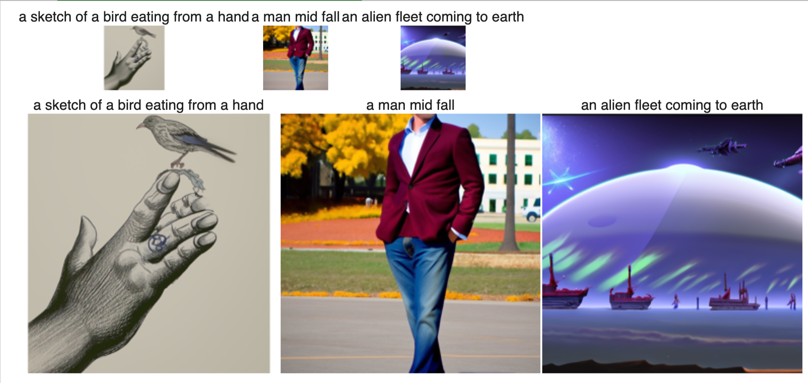
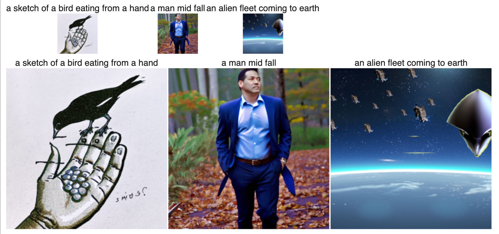
The image of the bird shows clear improvement and now accurately depicts the prompt. The "man mid fall" has improved quality but still misses the intended visual of a man in the air or slipping. The alien fleet prompt shows quality improvement in both visuals and accurately depicting the scene.
1.1 · Forward Process
To simulate the forward diffusion trajectory, I sample directly from the analytic
distribution q(xt | x0). The function mixes the clean Campanile image
with Gaussian noise according to the cumulative product of the noise schedule. For each timestep, I scale
the clean pixels by √ᾱt and inject fresh noise scaled by √(1 - ᾱt). I reuse the cached
alphas_cumprod table so that every forward sample exactly matches the DeepFloyd IF scheduler.
This keeps energy consistent and produces the predictable degradation shown below.
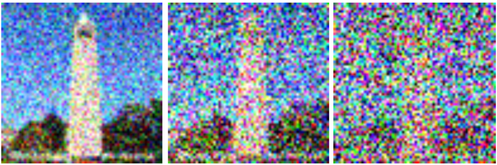
1.2 · Classical Denoising
Here I apply a 2D Gaussian blur with σ = 1.2 and a 5x5 kernel to each noisy Campanile frame using
torchvision.transforms.GaussianBlur. This averages neighboring pixels and suppresses high-frequency
noise without any learning. The classical method is visibly less effective. Even the output looks like it has another layer of blur on top.
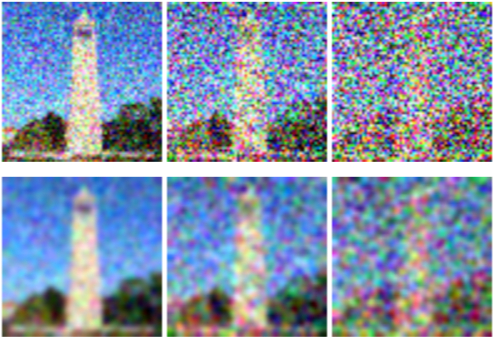
1.3 · One-Step Denoising with DeepFloyd
Using the pretrained DeepFloyd UNet, I predict the noise term ε̂θ(xt, t) for each noisy
Campanile frame and perform the single reverse step
x̂_0 = (x_t - √(1 - ᾱ_t) · ε̂) / √ᾱ_t. Even without iteration, this brings back sharp roof edges,
contrast in the tower windows, and the surrounding trees. It looks far cleaner than the Gaussian blur baseline.
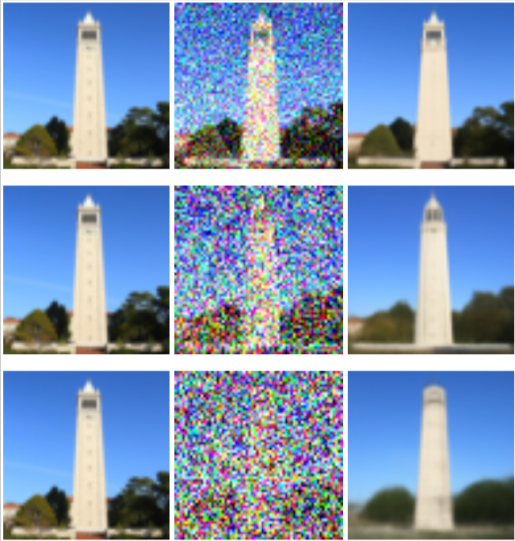
1.4 · Iterative Denoising
Starting from a noisy Campanile frame at timestep t = 690, I followed the strided cosine schedule toward 0.
Each iteration calls the Stage 1 UNet (conditioned on the "high quality picture" prompt embedding) to produce
both a noise prediction and a variance term. I reconstruct x̂0 and blend it with the current image using
DDPM weights derived from alphas_cumprod. Then I inject the scheduler variance via add_variance and move to the
next timestep. Every fifth step, I convert the tensor from [-1, 1] to display space with to_display to
visualize the trajectory. The second strip compares the iterative output with the one-step and Gaussian-blur baselines.
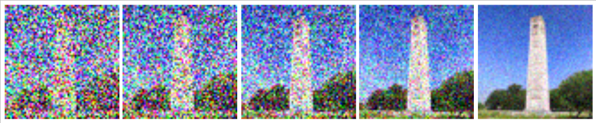
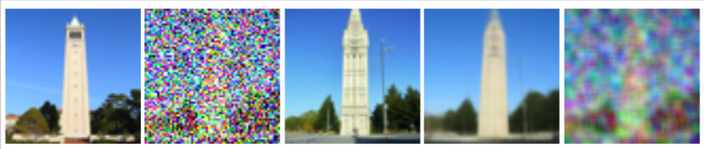
1.5 · Sampling from Noise
I sampled directly from Gaussian noise by running the same iterative scheduler (cosine/strided steps) used in 1.4, starting at the highest timestep and conditioning on the prompt "a high quality picture." Classifier-free guidance stayed at γ = 5.0 for consistency with earlier runs. Each image below comes from a different random seed, showing varied camera angles, lighting, and subject detail while keeping photorealistic structure.
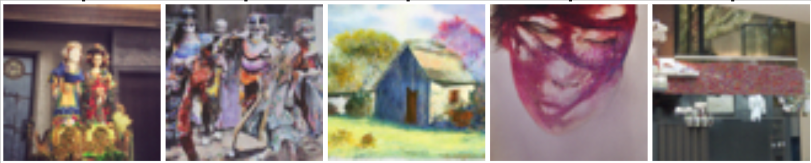
1.6 · Classifier-Free Guidance (CFG)
I enabled classifier-free guidance by running two UNet passes per timestep: one conditioned on the prompt "a high quality picture" and one unconditional. Their noise predictions are blended as ε = εu + γ(εc − εu) with guidance scale γ = 7. The blended noise then feeds the usual DDPM update with the scheduler variance (using the conditional branch’s variance). Sampling starts from pure Gaussian noise and follows the same strided/cosine schedule as in 1.4. The five samples below (different seeds) show improved sharpness and prompt adherence while keeping reasonable diversity.
1.7 · Image-to-Image Translation (SDEdit-style)
I applied SDEdit-style image-to-image translation by first noising a real image to different starting timesteps (indices [1, 3, 5, 7, 10, 20] in the strided schedule), then denoising with CFG (γ = 7) using conditional and unconditional passes. Higher start indices inject more noise, so lower timesteps preserve structure while higher ones enable stronger edits. All runs share the same prompt embedding for "a high quality picture" and reuse the variance-aware DDPM update from earlier parts.

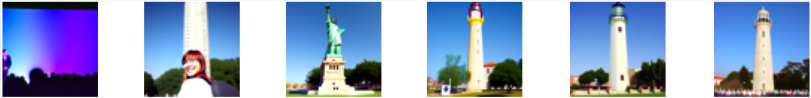
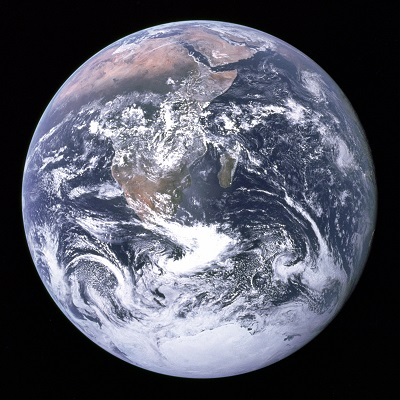
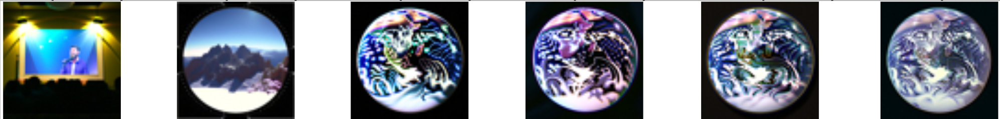
1.7.1 · Editing Hand-Drawn and Web Images
I applied the same SDEdit loop to a web photo and two hand-drawn inputs using the prompt
"a high quality picture". Each image is resized to 64x64 and normalized in
process_pil_im, then denoised with the six starting indices
[1, 3, 5, 7, 10, 20] (timesteps 960, 900, 840, 780, 690, 390).
Web image: Pom
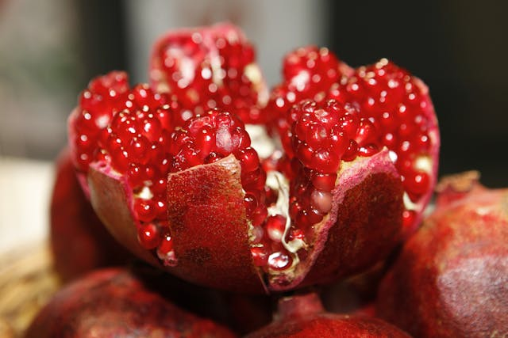
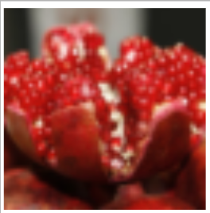
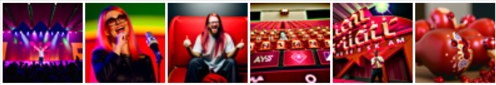
Hand-drawn: Cube
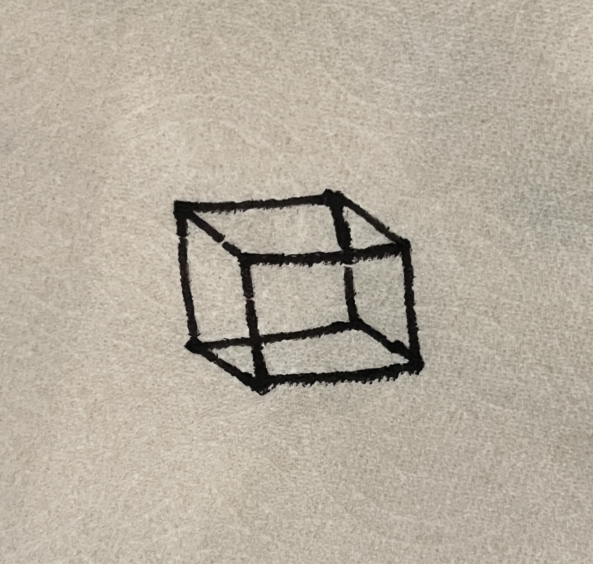
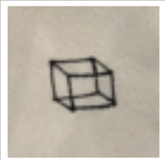
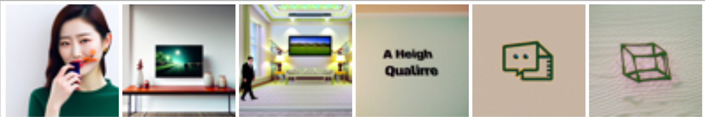
Hand-drawn: Flower
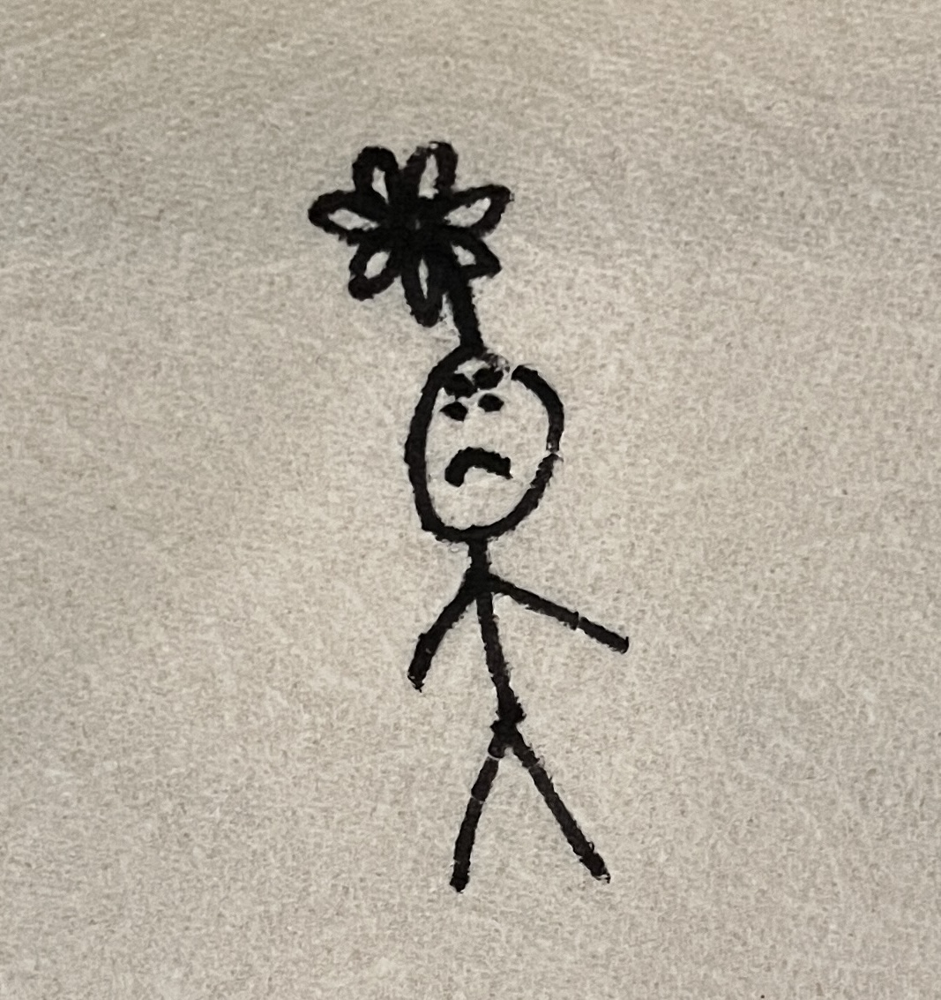
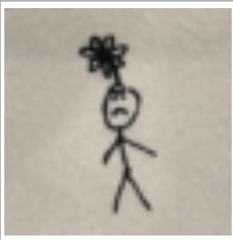
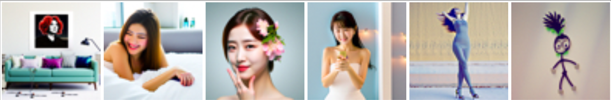
1.7.2 · Inpainting
I implemented RePaint-style inpainting. At each step, I re-noise the preserved region with the current
timestep's forward pass and splice it with pure noise inside the binary mask (1 = edit, 0 = keep). Then
I denoise with classifier-free guidance (γ = 7) using the same variance-aware DDPM update as before. The
inpaint function keeps everything in fp16 on CUDA and iterates over the strided schedule
to gradually hallucinate new content inside the masked area while freezing the unmasked pixels.
Campanile (reference mask + result)
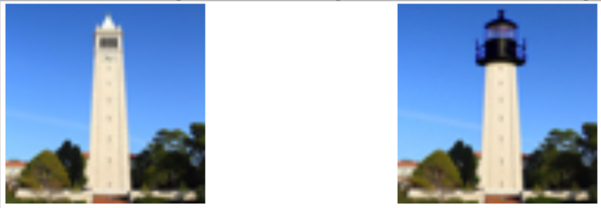
Bunny and Earth inpaints
1.7.3 · Text-Conditional Image-to-Image Translation
I used the same SDEdit schedule but swapped the embedding to the prompt "a high quality crayon drawing".
CFG steers the denoising toward crayon texture while the image conditioning keeps structure from the original
inputs. Compared to the unconditional runs, the text prompt adds a strong style prior without changing
content. Buildings stay recognizable, the bunny pose persists, and Earth retains its continents.
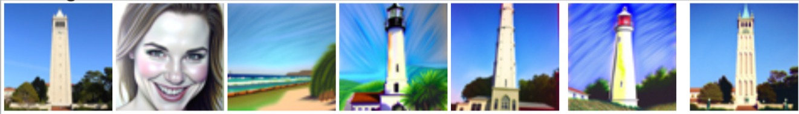
1.8 · Visual Anagrams
I implemented flip illusions by averaging classifier-free guidance noise from two prompts applied to upright and 180-degree-flipped versions of the same latent at every DDPM step. For prompt pair (p₁, p₂), I compute ε₁ on the upright image and ε₂ on the flipped image, then flip ε₂ back. I take ε = (ε₁ + ε₂)/2 and run the usual variance-aware DDPM update. The shared unconditional embedding supports CFG (γ = 7). Starting from pure noise lets the image converge to one concept upright and the other when rotated.
Illusion 1: Man mid fall ↔ Paint brush
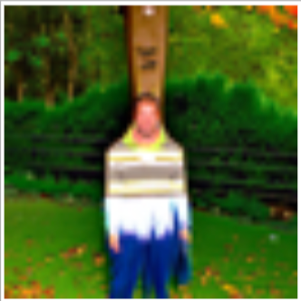
Illusion 2: Caveman ↔ Manatee
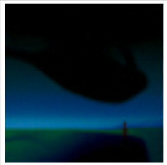
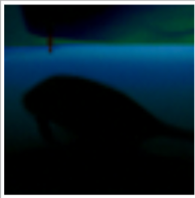
1.9 · Hybrid Images
I built factorized diffusion hybrids by splitting CFG noise into low and high frequencies for two prompts. At each timestep, I compute ε₁ for prompt 1 and ε₂ for prompt 2, then blur both with a 33x33 Gaussian (σ=2). I keep low(ε₁) for coarse structure and compute high(ε₂) = ε₂ - low(ε₂) for fine detail. Then I use ε = low(ε₁) + high(ε₂) in the variance-aware DDPM update. This keeps large shapes from prompt 1 while injecting textures and edges from prompt 2. I reused CFG scale γ=7 and the same strided schedule.
Hybrid 1: Man mid fall (low freq) + Paint brush (high freq)
Hybrid 2: Caveman (low freq) + Manatee (high freq)
Up close you see the high-frequency donor (brush bristles, manatee skin), while from farther away the coarse silhouette matches the low-frequency prompt.
Part B · Flow Matching from Scratch
Training UNet-based denoisers and flow-matching models on MNIST, with time and class conditioning.
1.1 · Implementing the UNet
I built a lightweight 28x28 MNIST UNet with two stride-2 conv downsamples to 14x14 then 7x7, AvgPool to 1x1, transpose-conv unflatten back to 7x7, then two upsample stages back to 28x28. Each Conv, Up, and Down block uses 3x3 convolutions with BatchNorm and GELU. Channel widths follow D to 2D on the encoder and mirror back to D before a final 1x1 output head. D is a hyperparameter.
- I implemented Conv, DownConv, and UpConv building blocks plus Flatten and Unflatten, then stacked them into ConvBlocks and symmetrical down/up paths.
- Final model path: encoder (ConvBlock D, DownBlock D to 2D), bottleneck (flatten then unflatten), decoder (UpBlock 2D to D, UpBlock D to D), then 1x1 conv head.
1.2 · Using the UNet to Train a Denoiser
I generated paired (z, x) examples by adding Gaussian noise z = x + σε with ε sampled from N(0, I) to normalized MNIST digits in [0, 1]. I implemented a visualization cell that samples a small batch from the test set, applies σ values of 0.0, 0.2, 0.4, 0.5, 0.6, 0.8, and 1.0 with a fixed seed, clamps to [0, 1], and renders a grid. This confirms the denoising task setup before training.
- The noise sweep shows gradual degradation. Digits remain crisp through σ of about 0.4, become fuzzy at 0.6, and are nearly unreadable by σ of 0.8 to 1.0.
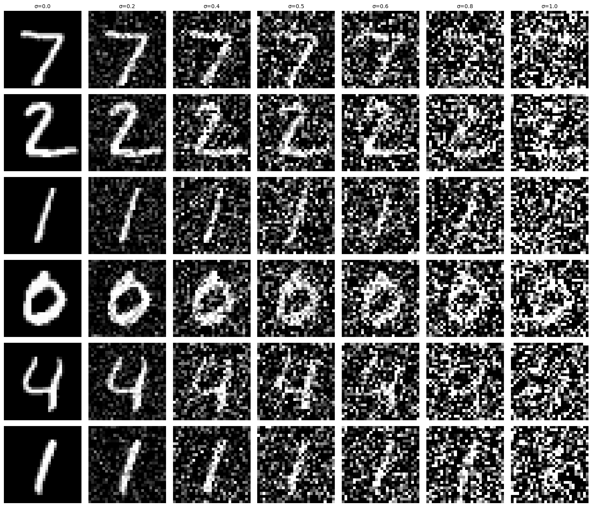
1.2.1 · Training (σ = 0.5)
I trained the MNIST denoiser with σ = 0.5 noise for 5 epochs. I used batch size 256, Adam with lr = 1e-4, hidden width D = 128, and on-the-fly noising each batch (z = x + 0.5 times ε). I loaded data from torchvision MNIST with shuffling on train and trained the UNet from 1.1 end-to-end on GPU. Total wall-clock time was 5 minutes and 21.7 seconds.
- The loss curve across all iterations shows stable descent without divergence.
- Denoising quality visibly improves from epoch 1 to epoch 5. Outputs sharpen and recover strokes.
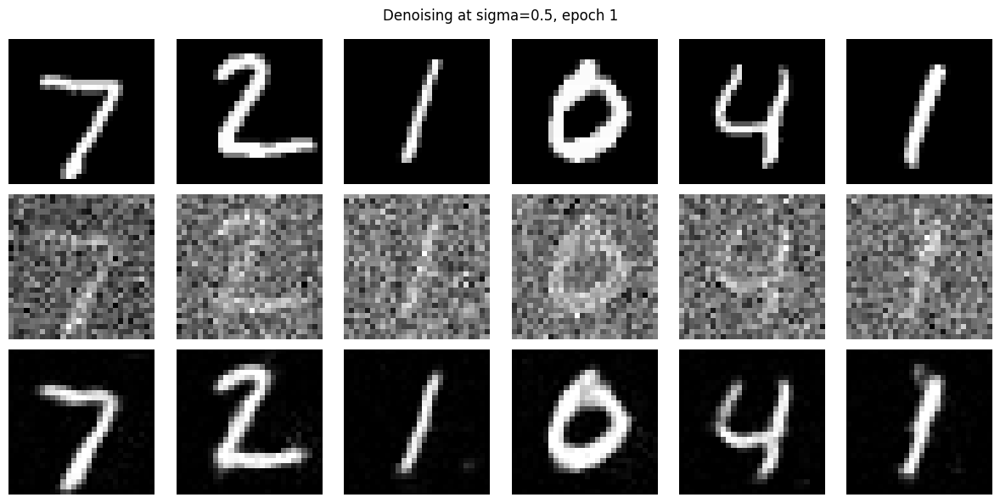
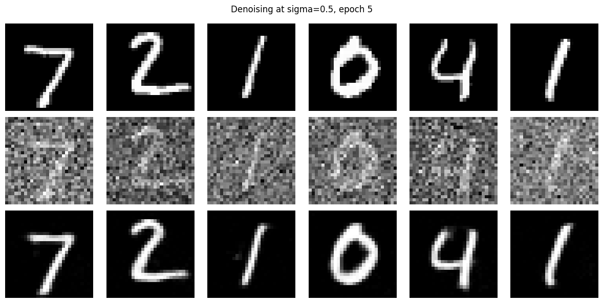
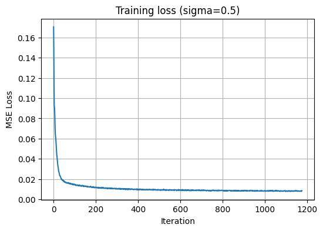
1.2.2 · Out-of-Distribution Testing
I evaluated the σ = 0.5-trained denoiser on held-out test digits across unseen noise scales of 0.0, 0.2, 0.4, 0.5, 0.6, 0.8, and 1.0. Using a fixed batch and seed, each digit was noised at a given σ then passed through the trained UNet. The model generalizes cleanly for σ at or below 0.5, retains legibility at 0.6 with mild blur, and degrades at 0.8 to 1.0 where inputs are nearly pure noise. Performance peaks near the training σ and falls off smoothly as the gap widens.
- Fixed test digits denoised across the σ sweep show strong recovery through 0.5 to 0.6 and visible artifacts beyond 0.8.
- The model generalizes best near the training σ. High-σ inputs lose structure and the UNet outputs become smeared.
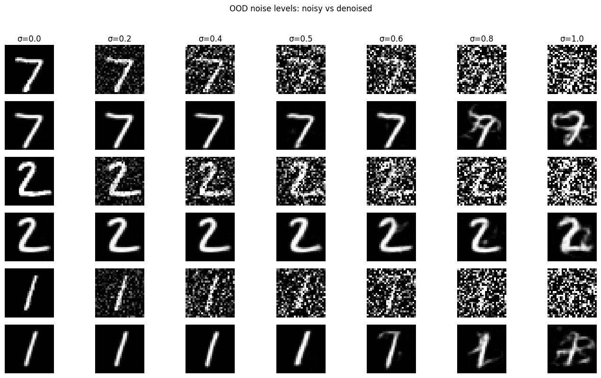
1.2.3 · Denoising Pure Noise
I retrained the same UNet to map pure Gaussian noise ε from N(0, I) directly to clean MNIST digits for 5 epochs with batch size 256 and Adam lr = 1e-4. Inputs are sampled noise and targets are clean digits. The model learns a deterministic "centroid" of the training set under MSE. Early outputs are blurry digit-like blobs, and later epochs sharpen strokes but still average across modes.
- Training loss steadily decreases without instability. The curve flattens after about 4 epochs.
- Epoch 1 outputs are diffuse blobs. By epoch 5, shapes resemble digits but remain averaged due to mode-averaging under MSE.
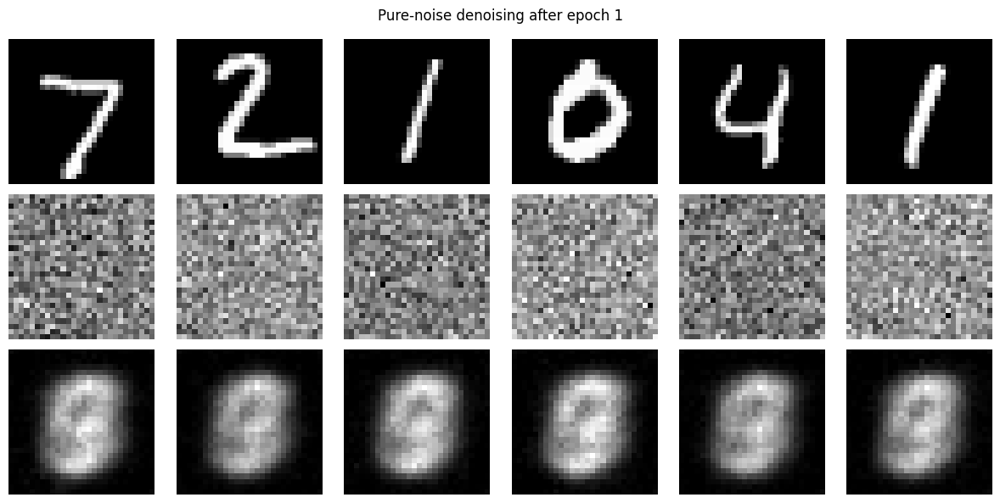
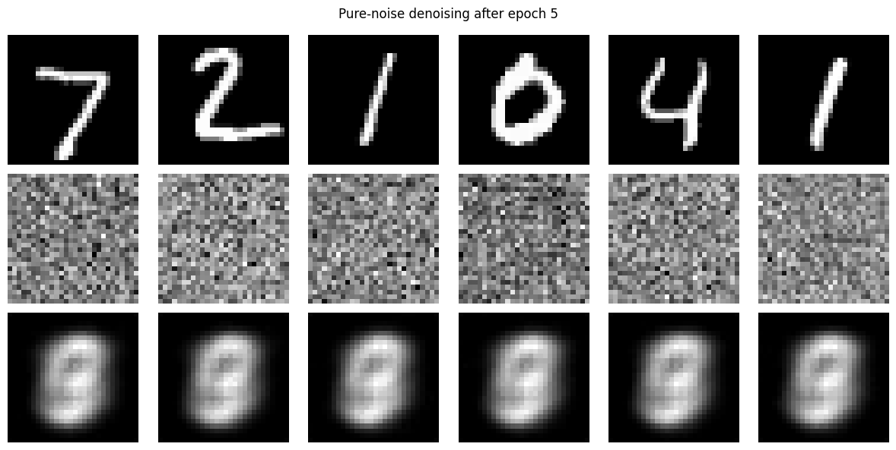
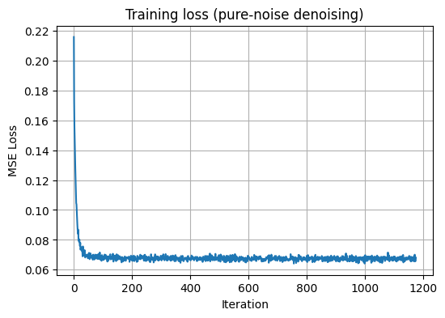
2.1 · Adding Time Conditioning to UNet
I injected normalized scalar time t in [0, 1] with two small FCBlocks and used them to modulate decoder features. An FCBlock is Linear then GELU then Linear. The time t goes through fc1_t to scale the bottleneck after unflatten, and fc2_t to scale the first up block. This preserves the original down/skip path while letting time control the flow field prediction.
- Modulation points: bottleneck times t1, then up1 output times t2. Skips remain unscaled.
- t is reshaped to (N,1), passed through FC to (N,C), and broadcast to (N,C,1,1) before multiplication.
2.2 · Training the Time-Conditioned UNet
I trained the time-conditioned UNet to predict the flow x1 - x0 on MNIST. For each batch, I sample t from U[0,1], draw x0 from N(0,I), mix xt = (1-t)x0 + t x1, and minimize MSE between predicted flow uθ(xt, t) and target x1 - x0. I used batch 64, D = 64, Adam lr = 1e-2, and ExponentialLR with gamma = 0.1^(1/num_epochs) for 5 epochs.
- Dataset: MNIST train split only, batch size 64, on-the-fly noise and t sampling per batch.
- Schedule: Adam lr = 1e-2 with exponential decay. I ran 5 epochs with stable descent.
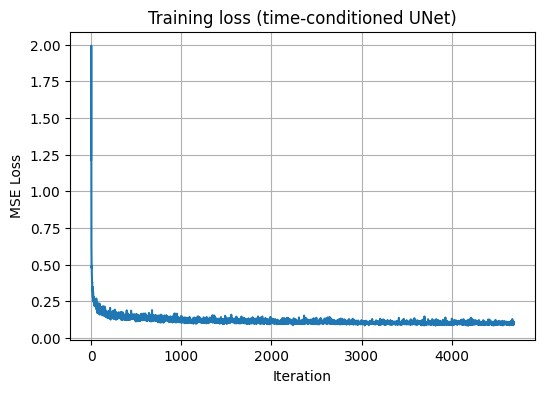
2.3 · Sampling from the Time-Conditioned UNet
I sample MNIST digits by starting from pure Gaussian noise x0 ~ N(0, I) and running the Euler sampler from Algorithm 2 for T uniform steps t = 0 → 1. At each step I query the trained time-conditioned UNet for the flow uθ(xt, t) and update xt+1 = xt + (1/T) · uθ. After T steps the final xT is decoded as an image. I reuse the same sampler while loading checkpoints after different training epochs to see how sample quality evolves.
- I generated samples from checkpoints at epochs 1, 5, and 10.
- Quality quickly improves. Epoch 1 is blurry but digit-like, epoch 5 sharpens strokes, and epoch 10 produces crisp, diverse digits.
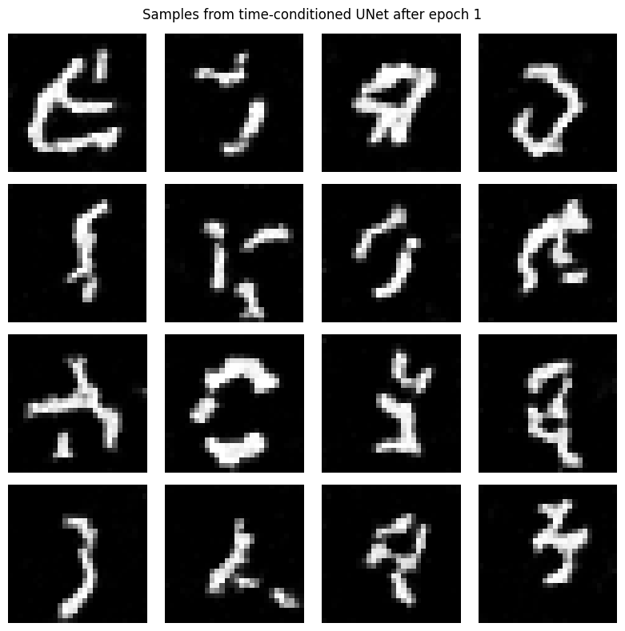
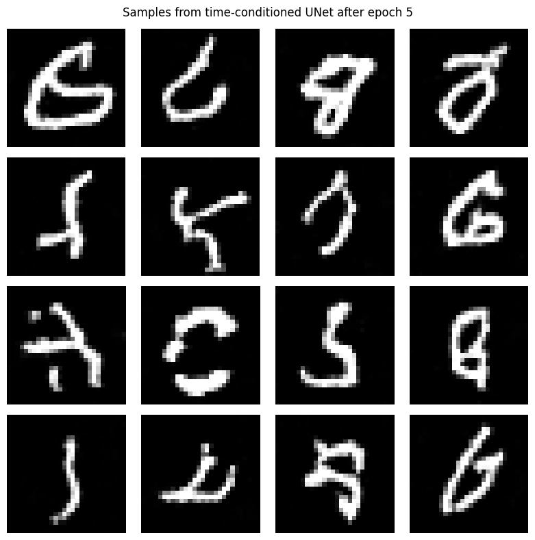
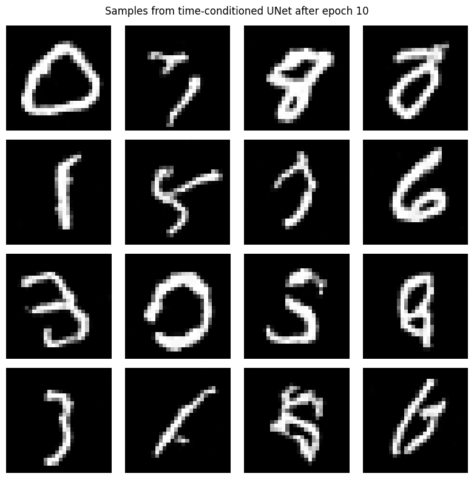
2.4 · Adding Class Conditioning to UNet
I extended the time-conditioned UNet with class conditioning by adding two more FCBlocks (fc1_c and fc2_c)
that take a one-hot encoded class vector c from 0 to 9 as input. The class is converted to a 10-dim
one-hot vector and passed through each FCBlock to produce modulation vectors c1 and c2. These combine
with time modulations as: bottleneck = c1 * unflatten + t1 and
up1 = c2 * up1 + t2. This lets class information scale features while time shifts them.
- Class representation: one-hot vector (N, 10) through FCBlock to (N, C) and broadcast to (N, C, 1, 1) for spatial modulation.
- Unconditional branch for CFG: during training, 10% of the time (p_uncond = 0.1) the class vector is zeroed out via a dropout mask. This teaches the model to also predict flows without class information.
2.5 · Training the Class-Conditioned UNet
I trained the class-conditioned UNet with the same hyperparameters as the time-only version: batch 64, hidden dim D = 64, Adam lr = 1e-2, and ExponentialLR decay with gamma = 0.1^(1/num_epochs) for 10 epochs. The key addition is the 10% class dropout (p_uncond = 0.1) applied per-sample each batch, which prepares the model for classifier-free guidance at inference.
- Training uses
class_fm_forwardwhich samples t from U[0,1], mixes noise with clean images, randomly masks class conditioning, and minimizes MSE on predicted flow. - Convergence is similar to the time-only model. The extra class signal helps the model specialize per digit without slowing down training.
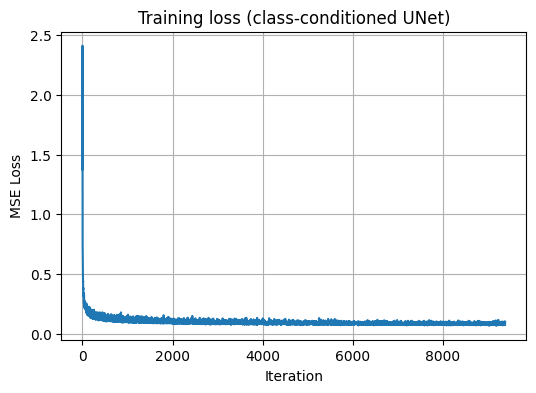
2.6 · Sampling with Class Conditioning and CFG
I sampled from the class-conditioned UNet using classifier-free guidance with γ = 5.0. At each Euler step, I run two forward passes: one with class conditioning (mask = 1) and one unconditional (mask = 0). Then I blend flows as u = uuncond + γ(ucond - uuncond). For each digit 0 to 9, I generate 4 samples to produce a 4x10 grid that shows controllability across all classes.
- Epoch 1 samples are noisy but already cluster by class. By epoch 5, digits are legible. Epoch 10 produces crisp, class-consistent outputs.
- CFG amplifies the class signal, improving sharpness and reducing ambiguity compared to unconditional sampling.
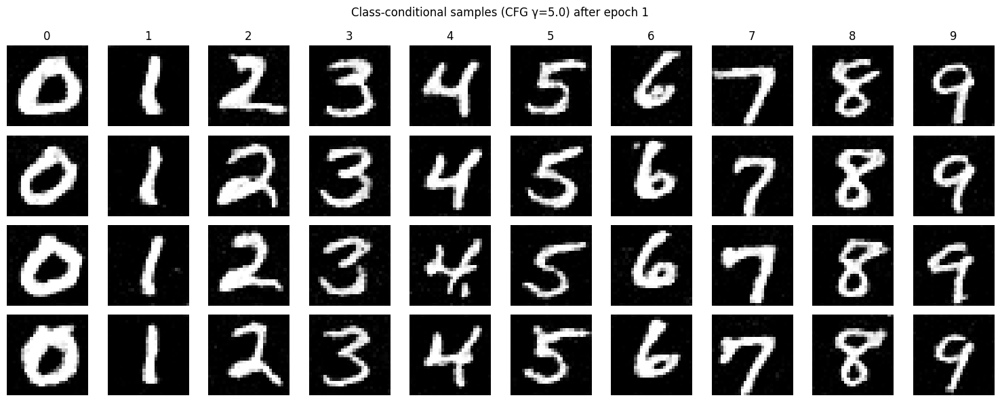
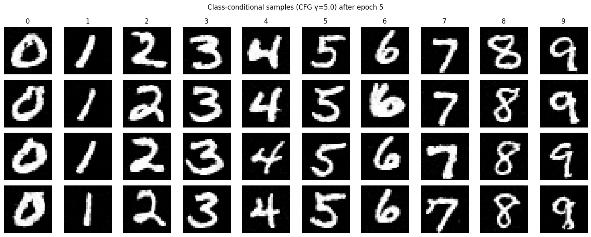
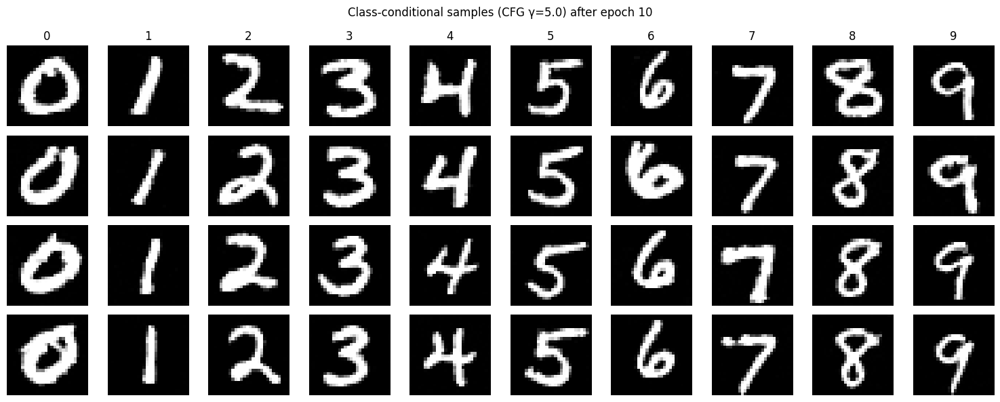
Training without LR Scheduler
To remove the exponential learning rate scheduler while maintaining performance, I lowered the constant learning rate from 1e-2 to 1e-3. The scheduler originally decayed lr from 1e-2 down to about 1e-3 over 10 epochs. A fixed 1e-3 approximates the average effective rate and avoids early instability from a high initial lr. The resulting samples below are comparable in quality, demonstrating that simplicity can match scheduled training when the constant lr is chosen appropriately.
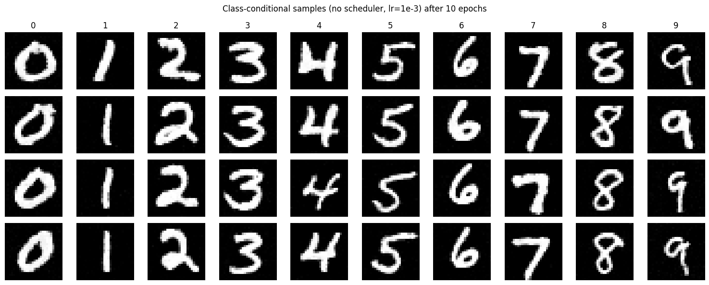